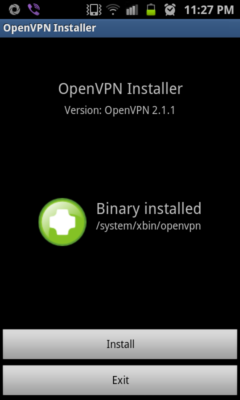

OpenVPN on (Rooted) SGS2
Since mid-last year, I started using a VPN service. Good for me, my VPN provider has both L2TP and OpenVPN services. L2TP is very easy to configure on Android phones (newer ones). But I find it unstable (may be my provider’s problem). So, I prefer OpenVPN as its stable.
I can only switch between L2TP and OpenVPN a limited number of time in a month. My provider do provide a good guide for getting OpenVPN up and running on a rooted android phone. But as we know “NO TWO DROIDS ARE SAME”, I had to improvise to get it all up. I did manage to get VPN up in a sec but requests were not getting routed via VPN.
After all the reading around at regular places, I got this thing working. Here’s how I did it. You would require:
- tun.ko module for your kernel (Optional as SGS2 should have it build in, I am using DXKL3 firmware. Else try tun.ko installer app), if you can not find one and don’t feel like compiling one, STOP HERE else read on.
- Rooted Phone (procedure for SGS2 here)
- BusyBox (SGS2 w/ CF-Root don’t have to do anything, its all burnt in, else use BusyBox Installer)
- VPN Account with OpenVPN service (I guess you have one already else just google it)
- Application: OpenVPN Installer
- Application: OpenVPN Settings
- A PC/Mac with Android SDK (adb tool) and Kies OR Terminal Emulator OR SSHDroid application in the phone
- 30 minutes of time to make all this work.

OpenVPN InstallOnce you have rooted your phone, install applications mentioned above as per your preference . Start “OpenVPN Installer” application and click “Install”. Choose “/system/xbin“ location for “openvpn“. For “ifconfig/route“ choose “/system/xbin/bb“ for ifconfig/route.
Now, this is the most tricky part. ifconfig and route commands did not get configured correctly. Then I stumbled on this thread where people were facing exact same issue. Its a huge thread, so just read post #30 and #34 or better, run following commands (in bold) on PC/Mac:
Remount /system are R/W
1adb remountCreate a symlink of /system/xbin at /system/xbin/bb
1adb ls -s /system/xbin /system/xbin/bbLink toolbox (busybox) as ifconfig and route under /system/xbin/bb
12adb shell ln -s /system/bin/toolbox /system/xbin/bbadb shell ln -s /system/bin/toolbox /system/xbin/bb(Optional) Reboot your phone to just make /system R/O
1adb reboot
Puh! congrats you are through with toughest part. Put your OpenVPN configuration files (keys and ovpn file) in /sdcard/openvpn folder. Start OpenVPN Settings, and you should see your configuration listed just under “OpenVPN“ option.
Optional: Long press on your configuration name and choose “Preferences”. Put Google DNS Server “8.8.8.8“ in VPN DNS Server field and check “Use VPN DNS Server“.
Okay I have just enough time to catch next episode of CSI:Miami on CBS. Bye.
Note: For other Android (2.1+) phones checkout vpnblog
">which tells your ip/location (I go to my VPN provider’s page) and check if all works.Okay I have just enough time to catch next episode of CSI:Miami on CBS. Bye.
Note: For other Android (2.1+) phones checkout vpnblog